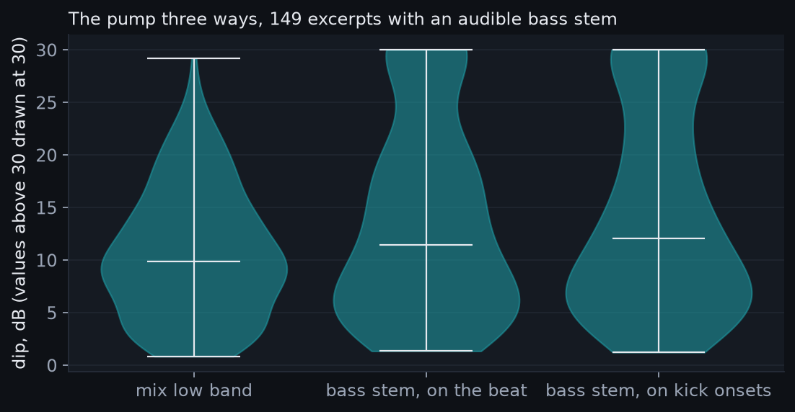
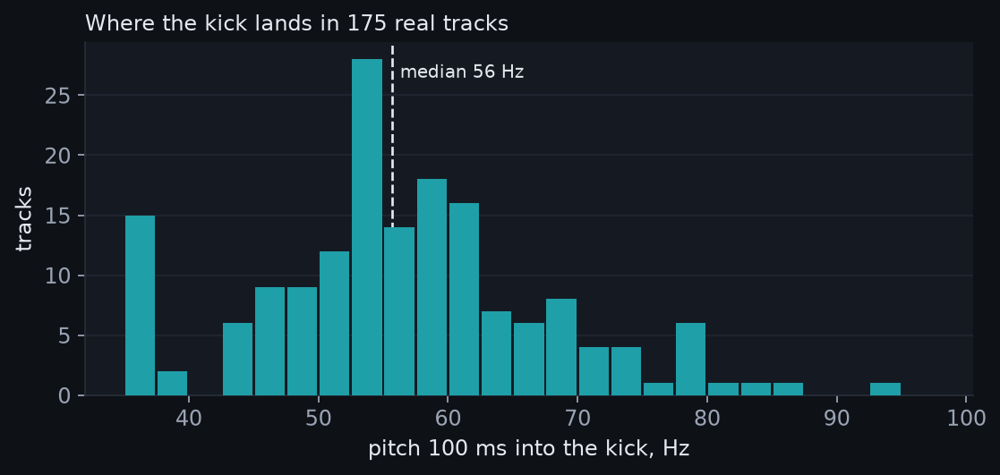
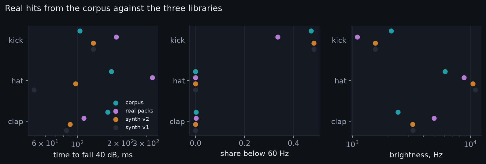

Part two asked producers for stems. None have come yet. So we made our own, with a free separator. It splits a track into drums, bass, voice and the rest. The split is not perfect. But it lets us look inside 215 tracks at once.
Three questions drove this. How deep is the pump, measured on the bass alone? Where does a real hard techno kick land? And how do real hits compare with our synthetic ones?
We cut a 64 second excerpt from each kept track. It starts one third into the track. That is almost always the main part. The separator ran on an ordinary laptop. It took about 25 seconds per excerpt.
Then we added the four stems back together. That gave the mix back. We found its beat grid as before. On the bass stem we measured the pump two ways. On the drum stem we cut every onset into a hit. The role model from part two named each one.
Part two measured the pump on the whole mix's low band. Now we can do better. The bass stem holds the rumble without the kick. Folding it on the beat gives the pump with less noise. Folding it on the kick's own onsets gives the sidechain directly.
149 of 215 excerpts have a bass stem we can trust. On those, the mix reads a 10 dB dip. The bass on the beat reads 11 dB. The bass on the kick's onsets reads 12 dB. Half the tracks sit between 6 and 22 dB there.

So part two's number was the least of it. The kick's own tail sits in the mix's low band. It fills part of the dip. Take the kick out and the ducking shows in full. The typical rumble ducks about 12 dB under the kick. It is back within 3 dB after 268 ms.
Almost every track does it. 144 of 149 tracks duck more than 3 dB. 116 duck more than 6 dB. Part one called the pump a medium finding. It is a strong one.
One catch remains. In 25 tracks the bass stem falls silent between kicks. The measures then read a 25 dB gap or more. That is not a pump. It is a track with no rumble. Or the separator put the rumble in the drums.
Part one ranked the kick's landing pitch as a medium finding. It was measured on synthetic kicks. Now we have 175 real ones. We took the loudest kicks in each drum stem. We read their pitch at 100 ms. The median is 56 Hz.
Half the tracks land between 51 and 64 Hz. 41 land below 50 Hz. 38 land above 65 Hz. Our synthetic kicks were drawn from 35 to 62 Hz. Real kicks spread further on both sides. One in four lands where ours never went.

The model found kicks in 207 of 215 drum stems. The median rate is 102 per minute. The median tempo is 143. So it names about seven kicks in ten. The other three it calls hook or space. Those are its words for a sound it cannot place.
Hats it named in only 85 stems, a few per minute. Claps in 85, about 2 per minute. A clap on two and four would give about 70. So most hats went to hook or space too. That matches part two's backbeat finding from the other side. It also shows the model's limit.
The model learned from clean single hits. A hit cut from a stem is not clean. It carries the tail of the sound before it. It carries the start of the sound after it. In a busy drum stem the model is lost. So we trust its confident kicks and little else.
From the drum stems we kept the confident hits. At most twelve kicks, twelve hats and eight claps per track. That is 1967 kicks, 265 hats and 169 claps. It is our first library of real hard techno hits. The labels come from the model, not from ears. Keep that in mind.
Now we can ask which library is nearest the real thing. The table compares middle values. Three measures, three jobs, four libraries.
| job | fall 40 dB, corpus | packs | synth v2 | synth v1 | sub share, corpus | packs | synth v2 | brightness, corpus | packs | synth v2 |
|---|---|---|---|---|---|---|---|---|---|---|
| kick | 104 | 186 | 129 | 129 | 0.47 | 0.34 | 0.48 | 2127 | 1096 | 1564 |
| hat | 172 | 330 | 97 | 50 | 0.00 | 0.00 | 0.00 | 6099 | 8839 | 10466 |
| clap | 162 | 111 | 89 | 84 | 0.00 | 0.00 | 0.00 | 2434 | 4924 | 3239 |

No library wins everywhere. On sub weight our synthetic kicks were right. The packs were light. On length the corrected synthetic hats sit nearer the corpus. Real claps ring longer than either library. Every library is brighter than the corpus hits.
Two warnings. Corpus kicks look short. Each cut ends at the next hat. Corpus hits look dark. The separator makes them less bright. Both are faults of the method, not facts about the music.
Sub weight and hat length are the numbers to keep.
The hit library is labelled by the model itself. That is a loop. So we test on the 318 sample pack hits instead. Their labels come from file names. A model trained only on corpus hits gets 64 in 100. The model trained on packs in part two scored 66.
That is the surprise of this page. Machine cut hits from real tracks teach almost like a pack. Trained on all three sets it scores 66 on the packs. On the corpus hits it scores 100. It learned from them.
So the meter now carries the model trained on all three. It is no worse on the packs. It has seen real hard techno kicks.
The separator was trained on pop and rock. It has never seen a rumble kick. It often puts the kick's tail with the drums. The rumble goes to the bass. That helps the pump measure and hurts the kick measures.
Hits cut from a stem are not clean. They carry sound from the other parts.
The hit labels are the model's own guesses. We kept only confident ones. That removes doubt, not error. And 64 seconds is one main part per track. Breakdowns and track starts are not in this set.
The lab does all this to any track you send it. Your own stems will be the real test. A separator trained on techno stems would fix the biggest doubt. Ten producers' stems would be enough to start.
corpus2/separate_excerpts.py, corpus2/stems_analysis.py, analysis/stems.py. Summary: corpus2/stems_summary.py. All on GitHub.out/library_corpus.csv, features only. No audio is shared.